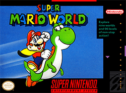

SNES

Release Date: August 23, 1991
Super Mario World was the first Mario game for the SNES. The game had much improved visuals over the previous games as it was now on the SNES which was better hardware. This game also introduced Yoshi , Mario's dinosaur sidekick. Once again Mario and Luigi are out to save Princess Peach from Bowser.
Oddly enough this was the only traditional Mario game released on the SNES. There were off-shoots such as Mario Kart and Super Mario World 2 starred Yoshi saving baby versions of Mario and Luigi. Super Mario All-Stars was also released which was Super Mario Bros 1-3 and Super Mario Bros: The Lost Levels.